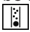
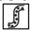
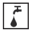
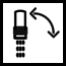

| Step / Context | PDF Shows | I Used | Correct? |
|---|---|---|---|
| "The cleaning symbol flashes during the entire process" |  |
OK Wrong | |
| "Press Power and Steam buttons simultaneously... [Power] flashes, [Clean] illuminates" | - | + | OK Wrong |
| Cleaning phase 1: "When [?] illuminates, proceed as follows" (remove brewing unit) | OK Wrong | ||
| Cleaning phase 2: "When [?] illuminates, proceed as follows" (fill water) | - | OK Wrong | |
| Cleaning phase 3: "When [?] illuminates, proceed as follows" (empty drip tray) | OK Wrong | ||
| Cleaning phase 4: "the middle bean is flashing" | - | OK Wrong | |
| End of cleaning: "When [?] illuminates" (finished) | OK Wrong |
| Step / Context | PDF Shows | I Used | Correct? |
|---|---|---|---|
| "The symbol for descaling flashes during the entire process" |  |
OK Wrong | |
| "Press Power and Steam buttons... [Power] flashes, [Descale] illuminates" | + | OK Wrong | |
| Descaling phase 1: "Empty and reinsert drip tray. [?] illuminates" |  |
OK Wrong PDF shows water, I used drip_tray |
|
| Descaling phase 2: "When [?] illuminates, proceed as follows" |  |
OK Wrong | |
| "Turn valve switch... [?] is flashing. Water flows..." | - | OK Wrong | |
| "Reinsert drip tray... [?] illuminates" (refill water) | - | OK Wrong | |
| Descaling phase 3: "When [?] illuminates, proceed as follows" | - | OK Wrong | |
| "When [?] is illuminated, empty drip tray..." | OK Wrong | ||
| "When [?] is illuminated, descaling programme is finished" | - | OK Wrong |
Descaling phase 1: The PDF (picture_24.png) shows the water icon, but I used drip_tray icon. This needs correction.